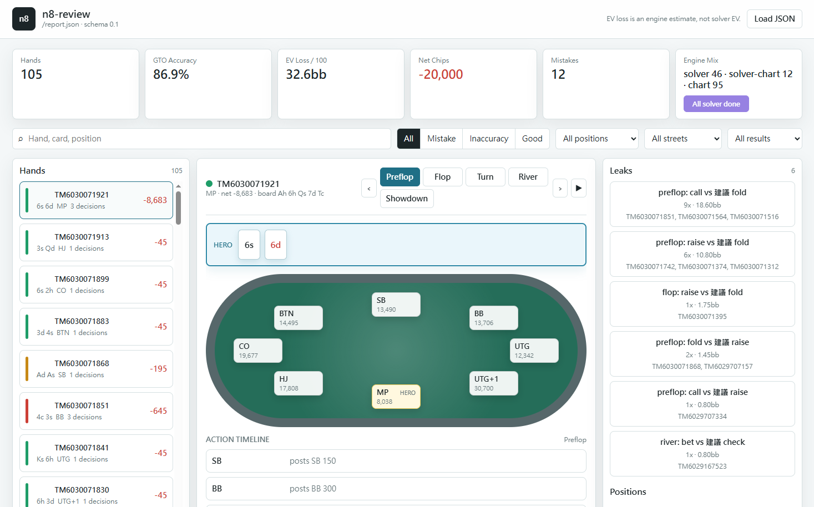

Decision grading
Every Hero action is labeled as good, inaccuracy, mistake, or unknown.
Natural8 / GGPoker tournament review
Upload hand histories, isolate every Hero decision, and see which actions are fine, inaccurate, or costly against GTO-informed strategy.
What it does
The engine parses Natural8 and GGPoker tournament exports, rebuilds the Hero view, grades each decision, and exports a JSON report for the browser UI.
Preflop decisions use range-chart lookup. Postflop decisions use fast equity and EV heuristics by default, with an optional external solver adapter for deeper review.
Every Hero action is labeled as good, inaccuracy, mistake, or unknown.
Replay the table, board, stacks, actions, and Hero decisions street by street.
Aggregate recurring mistakes by position, street, and EV-loss severity.
Track VPIP, PFR, 3Bet tendencies, tags, and assumed ranges for regular opponents.
Browser review
Open a generated JSON report in the browser, filter hands, inspect mistakes, and drill into action timelines without a database or build step.

Pipeline
HUD tendency analyzer
Use VPIP, PFR, ATS, and 3Bet to estimate a player type. This is a heuristic companion to the review engine, not a solver result. Small samples should be treated cautiously.
Solid entering range with controlled aggression.
Avoid thin out-of-position battles and respect strong preflop pressure.
Run locally
python -m venv .venv
.venv\Scripts\activate
pip install -e .
poker-hand-review web
GitHub Pages can show this project page and load existing JSON reports. Local .txt analysis and solver execution require the Python server.